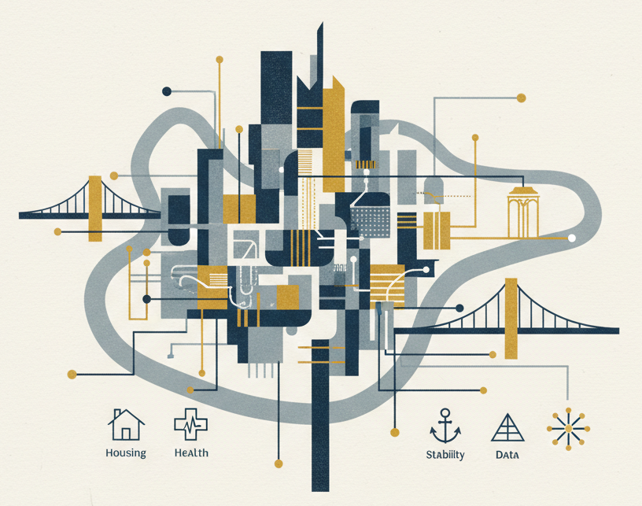

Utilizes a structured data platform to enforce standardized entries and includes a "Flagged Revisions" system for partner-approved data verification before publication.

ALLEGHENY SERVICE NAVIGATOR
Your Map to Stability
HOUSING AND STABILITY FOCUS
VERIFIED RESOURCE ATLAS
Your Map to Resources for Housing and Stability
ALLEGHENY COUNTY

The Project Mission: Bridging the Information Gap
The Allegheny Service Navigator is a collaborative, centralized resource designed to solve a core problem in social service delivery: outdated, disparate, and difficult-to-search information.
Our goal is to transition away from static lists to a dynamic, searchable knowledge base, ensuring social workers, county administrators, and individuals in crisis have immediate access to verified, up-to-date service data across Allegheny County. Crucially, our data collection model is uniquely focused on capturing real-world experiences from the frontline. We are incorporating direct feedback from case managers and, notably, from individuals with lived experience in transitional programs.
To illustrate, a common friction point occurs when funding is secured for a client's PA State ID, but the assistance is rejected at the counter because the established contract between the agencies does not cover out-of-state license transfers. This programmatic complexity leads to repeated, unresolved service attempts. The Navigator's lived experience data layer will explicitly document these critical caveats and resolution pathways, eliminating wasted time and client frustration.
This process allows us to address the observed inter-agency disconnects by documenting not only what services are available, but their operational status, eligibility hurdles, and real-world resolution pathways—providing a critical layer of data on service efficacy that traditional directories lack.
Value Proposition for Partner Organizations
The Navigator is being built to enhance the efficiency and integrity of service delivery for organizations like DHS, OVR, CHS, and local NGOs.
Designed for immediate, mobile-friendly access with map-based and proximity searching. It will connect users to the nearest available service in real-time.
The core structure enforces consistent data points (e.g., eligibility, hours of operation, capacity) for seamless sharing and reporting across partner systems.
By creating one central, living database, a service navigator reduces the staff time currently spent maintaining and cross-referencing multiple separate resource lists.
Project Status: Development Phase (Q4 2025)
The Allegheny Service Navigator is currently in the Data Structuring and Platform Build Phase.
The core data platform (a customized knowledge-base system) is installed, and we are actively finalizing the data schema with anchor partners.
Demonstrating our commitment to open development and security, the project's source code is publicly version-controlled.
View Source Code on GitHubNote: The production environment is masked during this critical phase to ensure only verified, structured information is published. We look forward to providing a full demo environment access soon.
Call to Collaboration
We are actively seeking input from your organization's data and frontline teams to define the critical fields and verification protocols. Your expertise ensures the platform is built for real-world impact.
To schedule a data-structuring consultation or a full platform demonstration, please contact:
Project Lead: Alex Taylor
Founder: Mike Smith
Email: Contact.ASNav@proton.me